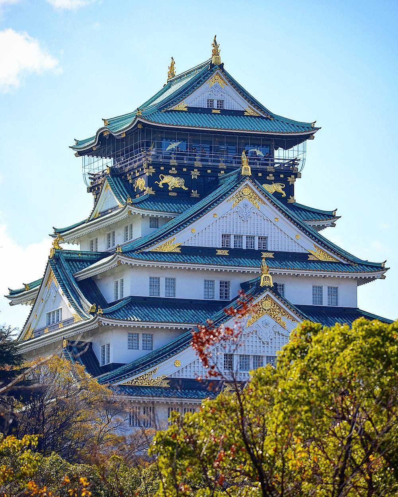
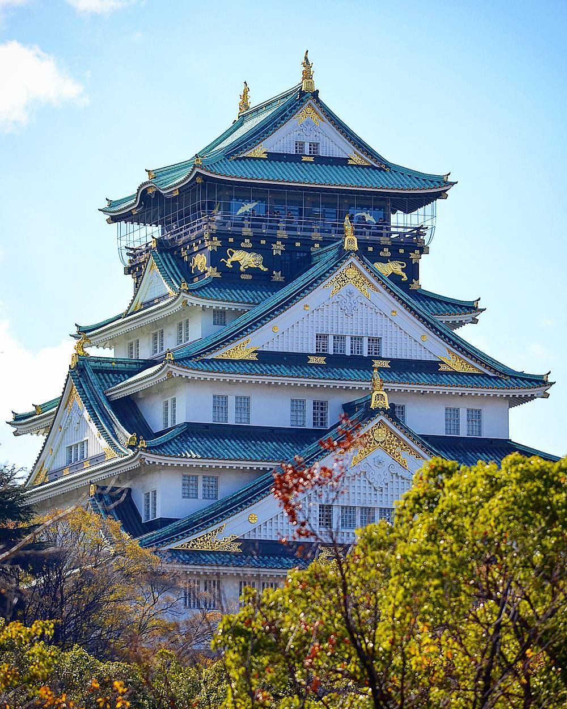

|
Japan |
Japan is an island nation located in East Asia
JAPAN
Welcome to our platform ,where history ,culture and innivation meet!.Explore the heritage of ancient civilizations
witness an dmilestine of human progress,and dive into the stories that have shaped our world.Whether you're Enscinated
by early socities or modern achivements,we invite you to embark on journey of discovery and learning.Stay curious ,
stay inspired, and enjoy your exploration with us!

Here are lots of interesting estinations to visit,
but dont be confused--they're already grouped
by category

 



Japan's early history dates back to the Jomon period (14,000 BC-300 BC)
with a hunter-gatherer society known for pottery: The Yayoi period (300 BC-300 A.D.)
introduced rice cultivation and metalworking, while the Kofun period (300-538 A.D.)
saw the rise of powerful clans. Buddhism arrived in the 6th century, shaping Japanese culture
and governance during the Asuka and Nara periods. The Heian period (794-1185 A.D) was a cultural golden age.
Feudal Japan emerged in the 12th century, with samurai and shogunates
ruling. The Tokugawa Shogunate (1603-1868 A.D)
brought peace and
Isolation until Western powers forced Japan to open in the mid-19th
century. The Meiji Restoration
in 1868 led to rapid modernization, Japan
became a world power expanding its empire in the early 20th century but
faced
defeat in World War II.Today, Japan is a major economic and
technological hub
| Category | ------------------------Details--------------------------- | |
|---|---|---|
| Values | Additional infromation | |
| Official Name | Nihon-koku(日本国) or Nippon-koku which means "State of Japan" |
- |
| Capital | Tokyo | (Administrative),Colombo(commercial) |
| Area | Approximately 377,975 square kilimeters | (25,332 sq miles) |
| Population | Around 125 million people (as of 2023). | (2023 estimate) |
| Languages | Japanese | (link language) |
| Currency | Japanese Yen (V, JPY) | (link language) |
| Climate | Varied climate: Japan experiences four distinct seasons.
|
|
| Major Religions | Shintoism and Buddhism | (25,332 sq miles) |
| Independence Day | Japan does not have an Independence Day | (2023 estimate) |
| Government Type | Constitutional Monarchy with a Parliamentary Democracy. | (link language) |
| Major Industries | Automobiles, Electronics, Robotics, Tourism | (25,332 sq miles) |
| UNESCO World Heritage Sites | Japan has 25 UNESCO World Heritage Sites | (2023 estimate) |
| Natural Resources | 65,610 sq km | (link language) |
| Cultural Festivals | Approximately 22 million | (25.332 sq miles) |

Japan offers a captivating blend of rich cultural
heritage, modern technology, stunning landscapes,
and
world-class hospitality. Known for its "omotenashi"
culture of exceptional customer service, visitors
are
treated with great care. Whether exploring Tokyo and
Osaka's bustling cities or Kyoto's tranquil temples,
Japan ensures a seamless and unique experience for tourists.
| Geography and Biodiversity | Cultural Heritage | Cultural Heritage |
|---|---|---|
| Japan's geography includes four main islands and diverse natural wonders like Mount Fuji and Okinawa's beaches. With its varied climate, Japan offers cherry blossoms in spring, lush summers, colorful autumns, and snowy winters. National parks such as Nikko and Shiretoko feature rich ecosystems with forests, mountains, and wildlife. |
Japan's rich cultural heritage includes 25 UNESCO World Heritage Sites, such as temples, shrines, and castles. Kyoto, known for its traditional architecture, features landmarks like Kinkaku-ji and Fushimi Inari Taisha. Ancient traditions like tea ceremonies, kimono, and sumo wrestling are still practiced, while Buddhism and Shintoism influence the country's festivals, shrines, and gardens. |
Japanese cuisine, or washoku, is celebrated for its balanced flavors, presentation, and use of fresh, seasonal ingredients. Popular dishes include sushi ramen, and tempura, with regional specialties like Osaka's takoyaki and Hokkaido's seafood. Dining options range from high-end kaiseki to casual izakayas and ramen shops. Japanese hospitality is evident in the meticulous attention to detail in both taste and presentation, making each meal a unique experience. |